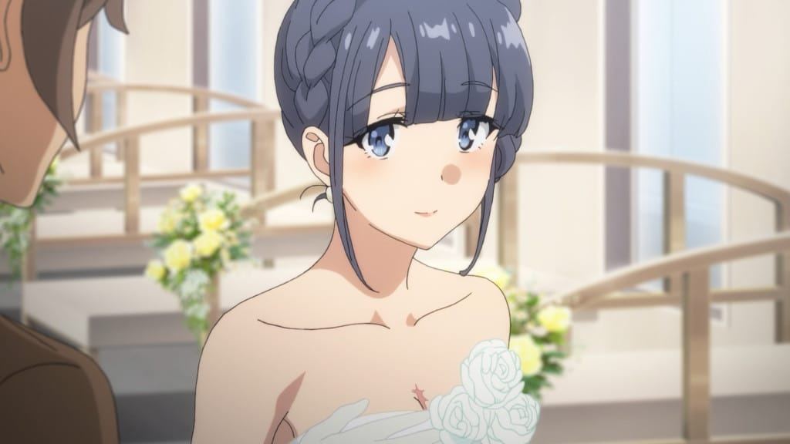
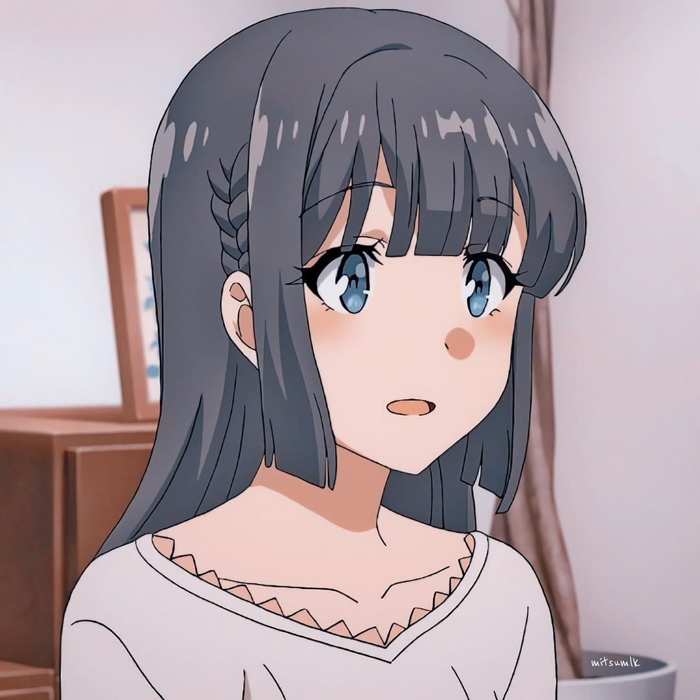

Shoko Makinohara (牧之 原翔子) es una de los personajes principales de Seishun Buta Yarō. Después de ayudar a Sakuta Azusagawa a lidiar con el síndrome de la pubertad
de su hermana, se convirtió en el primer enamoramiento de Sakuta hasta que desapareció repentinamente.

Shoko es una persona amable y compasiva, ya que ayudó voluntariamente a Sakuta Azusagawa y Kaede Azusagawa a atravesar las dificultades del síndrome de la pubertad y también estaba dispuesta a adoptar un gato abandonado bajo la lluvia.
